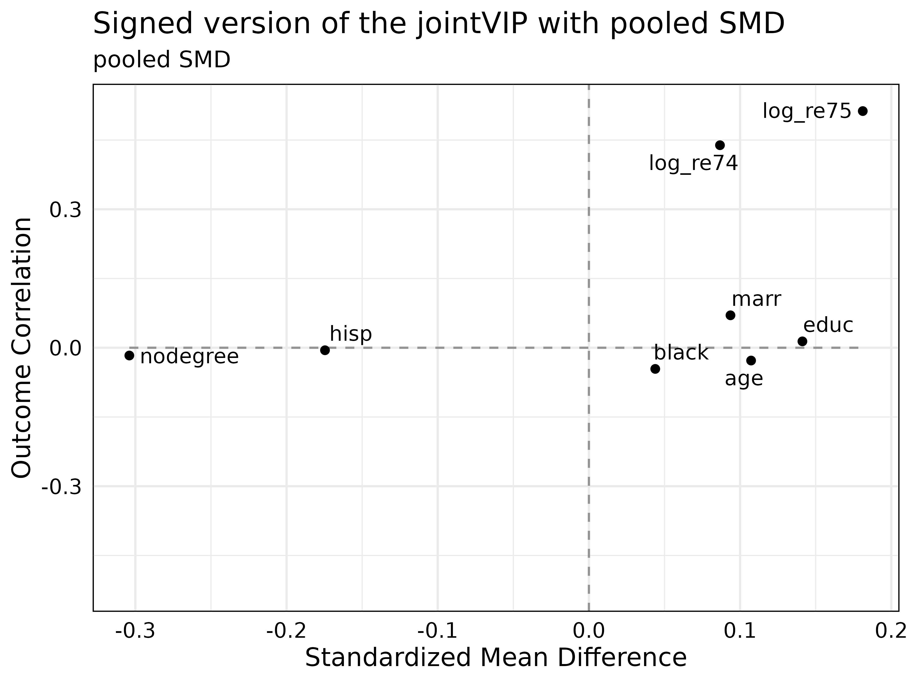
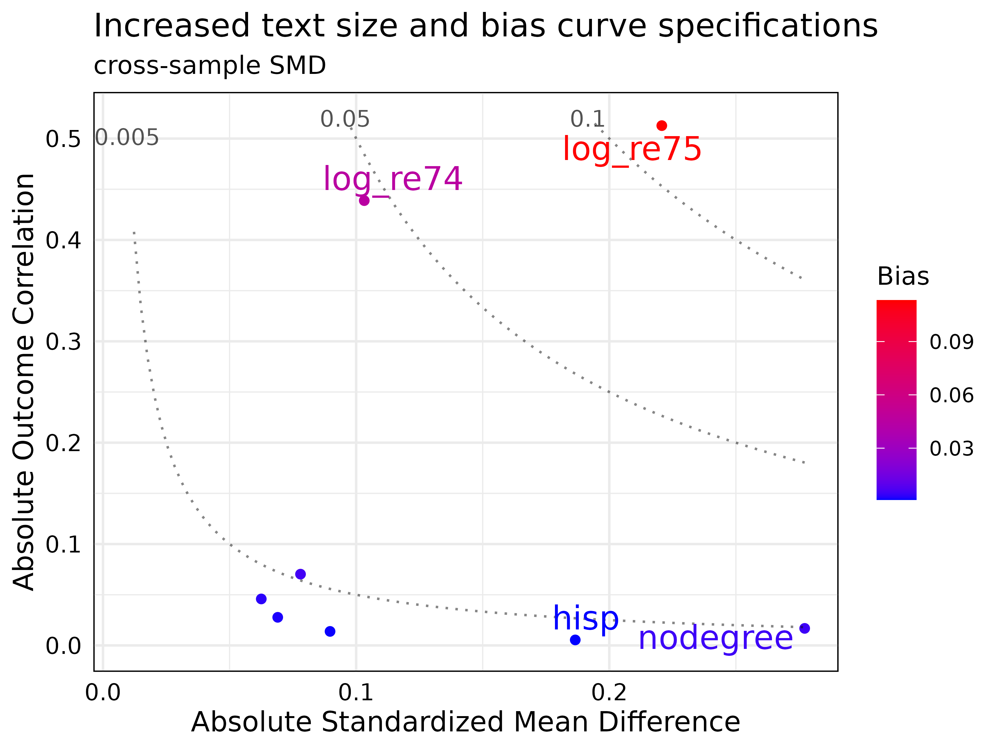
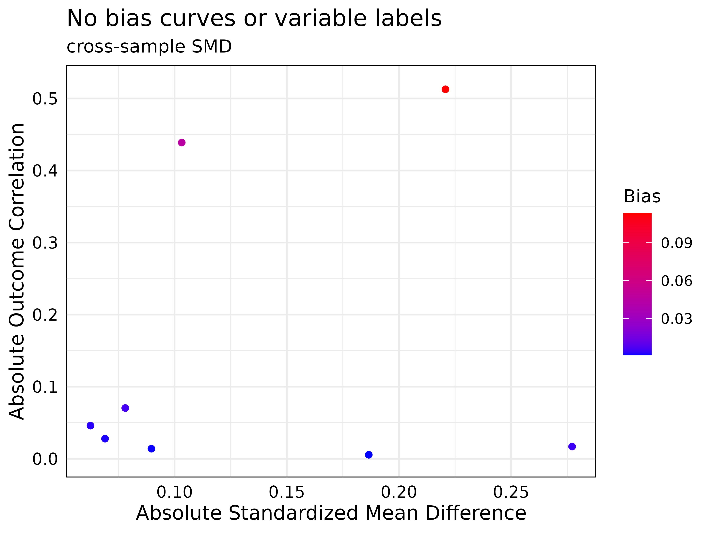
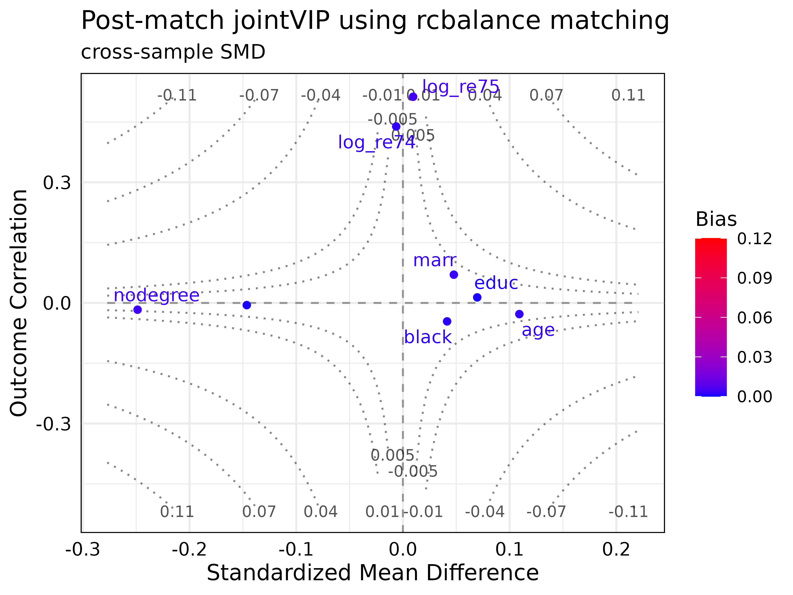

jointVIP packagevignettes/additional_options.Rmd
additional_options.RmdjointVIP
See the Get started with jointVIP vignette to get started on how to
use jointVIP package. Using the same data sets, this
vignette’s main purpose is to demonstrate other options that are
available.
library(jointVIP)
# gentle reminder of how to create a new jointVIP object
new_jointVIP = create_jointVIP(treatment = treatment,
outcome = outcome,
covariates = covariates,
pilot_df = pilot_df,
analysis_df = analysis_df)
# gentle reminder of how to create a new post_jointVIP object
post_optmatch_jointVIP = create_post_jointVIP(new_jointVIP,
post_analysis_df = optmatch_df)summary() and
print()
# # simplest usage
# summary(new_jointVIP)
summary(new_jointVIP,
smd = 'pooled',
use_abs = FALSE,
bias_tol = 0.005)
#> Max bias is 0.093
#> Min bias is -0.003
#> 4 variables are above the desired 0.005 absolute bias tolerance
#> 8 variables can be plotted
print(new_jointVIP,
smd = 'pooled',
use_abs = FALSE,
bias_tol = 0.005)
#> bias
#> log_re75 0.093
#> log_re74 0.038
#> marr 0.007
#> nodegree 0.005
# not run
# get_measures(new_jointVIP, smd = 'cross-sample')The summary() and print() functions have
the same additional parameters and uses rounded numbers to the third
decimal place.
The smd parameter allows only pooled or
cross-sample options. The cross-sample is based on the
analysis sample numerator and pilot sample denominator (equivalent to
standardized version of the one-sample omitted variable bias). The
cross-sample version is the default. The pooled version of the
standardized mean difference (standard) can be specified. The
pooled option is the standard option used in balance tables
and Love plots that uses both treated and control variances from the
analysis data set to construct the SMD. Note this pooled
option applies the same formula to both binary and continuous
variables.
The use_abs parameter takes in either TRUE or FALSE,
stating if set TRUE (default), the absolute measures are used.
Otherwise, signed measured are used if set to be FALSE.
The bias_tol parameter is to set the absolute bias
tolerance that one wishes to examine at a glance. The default is
0.01.
Under the hood, get_measures() function is used to
calculate. If the researcher wishes to save the measures calculated,
perhaps get_measures() would be used; example is shown
above. Only signed measures are presented as outputs for that
function.
plot()
# # simplest usage
# plot(new_jointVIP)
plot(new_jointVIP,
smd = 'pooled',
use_abs = FALSE,
plot_title = 'Signed version of the jointVIP with pooled SMD')
plot(new_jointVIP,
bias_curve_cutoffs = c(0.005, 0.05, 0.10),
text_size = 5,
label_cut_std_md = 0.1,
max.overlaps = 15,
plot_title = 'Increased text size and bias curve specifications',
expanded_y_curvelab = 0.002
#label_cut_outcome_cor = 0.2,
#label_cut_bias = 0.1
)
plot(new_jointVIP,
bias_curves = FALSE,
add_var_labs = FALSE,
plot_title = 'No bias curves or variable labels'
)
There are many parameters for the plot() option. The
smd and use_abs options functions the same as
above. The other main parameter input is plot_title, which
allows users to specify the title of the plot. Additional parameters not
listed as a main parameter is explained and example usage is shown
above.
bias_curve_cutoffs: draws bias curves by the
specifications. This is only used when smd is specified as
cross-sample.text_size: text size of the variable labels can be
increased.max.overlaps: maximum overlap of the variable
labels.label_cut_std_md: standardized mean difference label
cutoff, an example would be, if you wish to label all variables with
standardized mean difference above 0.1.label_cut_outcome_cor: outcome correlation label
cutoff, an example would be, if you wish to label all variables with
outcome correlation above 0.2.label_cut_bias: bias label cutoff, an example would be,
if you wish to label all variables with bias difference above 0.1.bias_curves: TRUE (default) draws the omitted variable
bias curves, FALSE suppresses the bias curves. If
bias_curve_cutoffs also specified, bias_curves
takes priority. This is only used when smd is specified as
cross-sample.add_var_labs: TRUE (default) adds variable labels. This
suppresses all label_cut inputs if specified FALSE.expanded_y_curvelab: if one wishes to expand the
y-axis, the bias curve labels don’t automatically get updated. So, this
allows the fine-tuning of the bias-curve labels. Typically this is used
under the hood for bootstrap version of the plot. However, user can
specify this if they wish. This is only used when smd is
specified as cross-sample.The same variables are specified in the Get started with jointVIP vignette; here we choose a matching example to demonstrate the additional parameters.
summary() and
print()
# get_post_measures(post_optmatch_jointVIP, smd = 'cross-sample')
summary(post_optmatch_jointVIP,
use_abs = FALSE,
bias_tol = 0.01,
post_bias_tol = 0.001)
#> Max bias is 0.113
#> Min bias is -0.003
#> 2 variables are above the desired 0.01 absolute bias tolerance
#> 8 variables can be plotted
#>
#> Max absolute post-bias is 0.005
#> Post-measure has 6 variable(s) above the desired 0.001 absolute bias tolerance
print(post_optmatch_jointVIP,
bias_tol = 0.001)
#> bias post_bias
#> log_re75 0.113 0.005
#> log_re74 0.045 0.003
#> marr 0.005 0.003
#> nodegree 0.005 0.004
#> black 0.003 0.002
#> age 0.002 0.003
#> educ 0.001 0.001
#> hisp 0.001 0.001
plot(post_optmatch_jointVIP,
plot_title = "Post-match jointVIP using rcbalance matching",
smd = 'cross-sample',
use_abs = FALSE,
add_post_labs = TRUE,
post_label_cut_bias = 0.001)
All of the options from above can be used; below will only address additional parameters or function outputs.
get_post_measures() takes in a post_jointVIP object and
smd specifications for measures from the post-matched
results.summary() function adds text output of post-match
results in addition to pre-match results. The post_bias_tol
specifically is a summary() parameter that outputs
post_bias tolerance for text comparison rounded to the fourth decimal
place.print() function adds another column to post-match
bias.plot() function includes two new parameters:
add_post_labs TRUE (default) shows the variable labels
post-matching/weighting; FALSE suppresses it.post_label_cut_bias numeric number for variable labels;
only used when add_post_labs is TRUE.